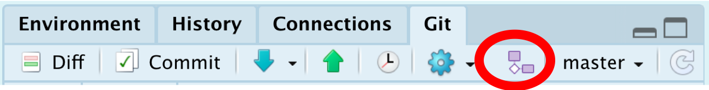
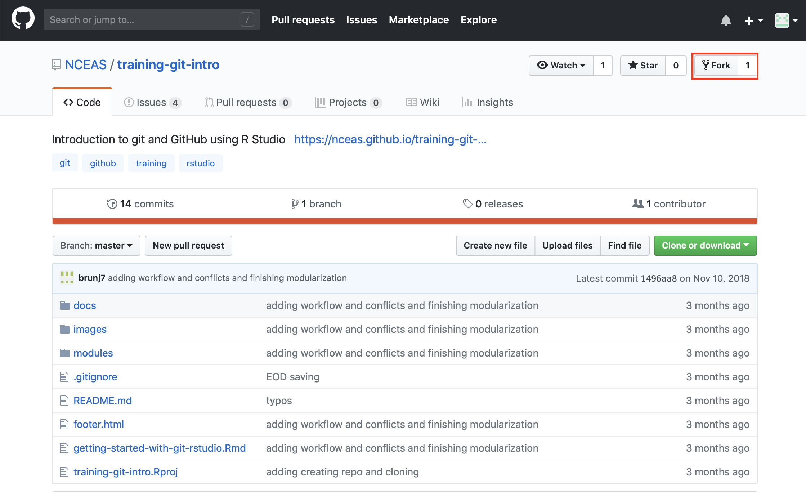
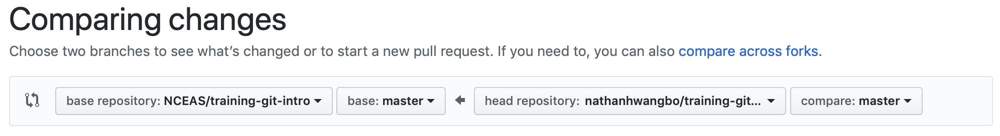
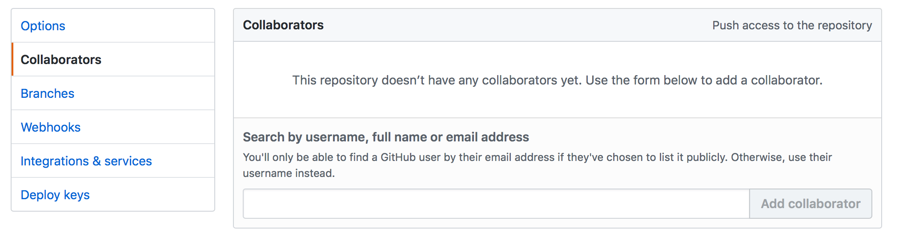
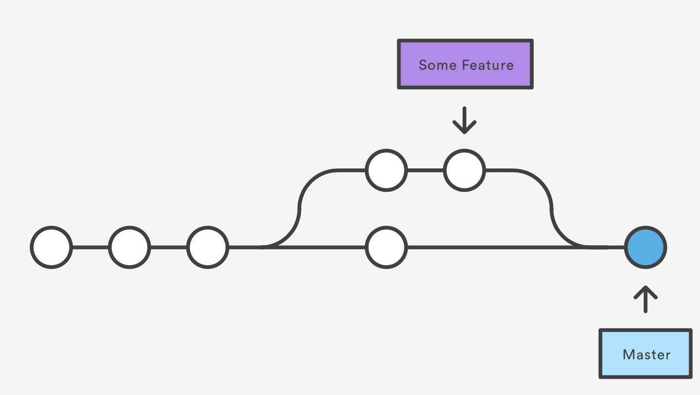
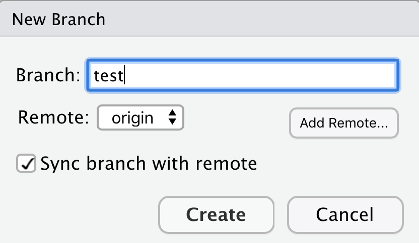
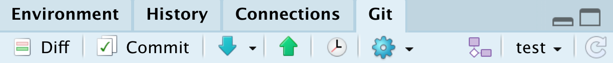
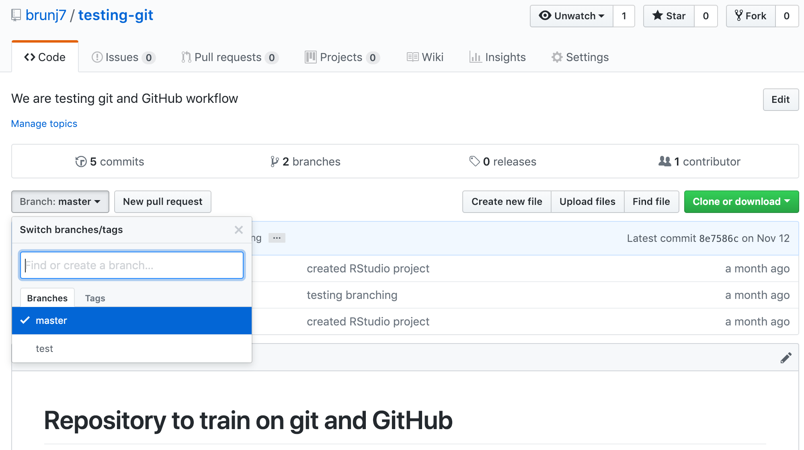

Collaborative workflows to code together
Collaborative Workflows with GitHub
Collaborating through Forking, aka the GitHub workflow
A fork is a copy of a repository that will be stored under your user account. Forking a repository allows you to freely experiment with changes without affecting the original project. We can create a fork on Github by clicking the “fork” button in the top right corner of our repository webpage. 
Most commonly, forks are used to either propose changes to someone else’s project or to use someone else’s project as a starting point for your own idea.
When you are satisfied with your work, you can initiate a Pull Request to initiate discussion about your modifications and requesting to integrate your changes to the main repository. Your commit history allows the original repository administrators to see exactly what changes would be merged if they accept your request. Do this by going to the original repository and clicking the “New pull request” button
Next, click “compare across forks”, and use the dropdown menus to select your fork as the “head fork” and the original repository as the “base fork”.
Then type a title and description for the changes you would like to make. By using GitHub’s @mention syntax in your Pull Request message, you can ask for feedback from specific people or teams.
This workflow is recommended when you do not have push/write access to a repository, such as contributing to a open source software or R package, or if you are heavily changing a project.
Collaborating through write / push access
When you collaborate closely and actively with colleagues, you do not want necessarily to have to review all their changes through pull requests. You can then give them write access (git push) to your repository to allow them to directly edit and contribute to its content. This is the workflow we will recommend to use within your working group.
Adding collaborators to a repository
- Click on the repository
- On the right panel, click

- On the left pane, click
Collaboratorsand enter the usernames you want to add
Under this collaborative workflow, we recommend to use git branches combined with pull requests to avoid conflicts and to track and discuss collaborators contributions.
Branches

What are branches? Well in fact nothing new, as the master is a branch. A branch represents an independent line of development, parallel to the master (branch).
Why should you use branches? For 2 main reasons:
- We want the master to only keep a version of the code that is working
- We want to version the code we are developing to add/test new features (for now we mostly talk about feature branch) in our script without altering the version on the master.
Working with branches
Creating a new branch
In RStudio, you can create a branch using the git tab.
- Click on the branch button
- Fill the branch name in the new branch window; in this example, we are going to use
testfor the name; leave the other options as default and click create

- you will be directly creating a local and remote branch and switch to it

Congratulations you just created your first branch!
Let us check on Github:

As you can see, now there are two branches on our remote repository: - master - test
Using a branch
Here there is nothing new. The workflow is exactly the same as we did before, excepts our commit will be created on the test branch instead of the master branch.